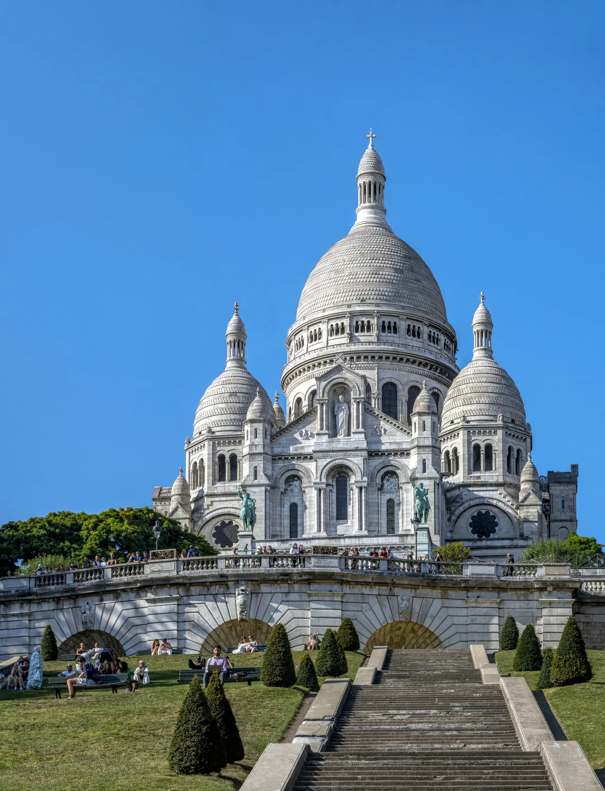

{kind=link}

BnF Richelieu
1868년 앙리 라브루스트가 주철 기둥과 9개 도자기 돔으로 완성한 19세기 건축의 걸작 '라브루스트 열람실'과 일반에 전면 무료 개방된 거대한 타원형 '오발 열람실(Salle Ovale)', 프랑스 국립도서관 박물관.

파리 북쪽 18구와 9구에 걸쳐 솟아오른 파리에서 가장 높은 해발 130m 석회암 바위 언덕(Butte Montmartre)이자 19세기 말 보헤미안 예술 혁명의 진원지다.
2세기 파리의 초대 주교 생 드니(Saint Denis)가 참수당한 '순교자의 언덕(Mons Martyrum)'에서 이름이 유래되었으며, 1871년 파리 코뮌의 피비린내 나는 비극을 치유하기 위해 국민적 헌금으로 세워진 순백의 사크레쾨르 대성당(Basilique du Sacré-Cœur)이 정상에서 파리 시내 전체를 굽어보고 있다.
19세기 말 파리 시 경계 바깥에 있어 세금이 면제되자 피카소(바토 라부아르), 모딜리아니, 르누아르, 반 고흐, 툴루즈 로트레크 등 가난한 예술가들이 모여들어 아틀리에를 차리고 카바레 물랭 루주(Moulin Rouge)와 오 라팽 아질(Au Lapin Agile)에서 밤새 예술을 논했다.
언덕 북쪽의 몽마르트르 포도밭(Clos Montmartre)과 낭만적인 계단길, 화가들의 테르트르 광장(Place du Tertre)을 거쳐, 언덕 남쪽 기슭의 트렌디한 베이커리, 네오 비스트로, 빈티지 숍이 밀집한 사우스 피갈(SoPi, South Pigalle)로 이어지는 입체적인 도보 탐험이 펼쳐진다.
"남쪽 정면의 극심한 관광객 호객꾼을 피해, 북사면(Lamarck-Caulaincourt역)에서 진입하여 고요한 자갈 골목과 포도밭, 풍차를 감상하며 정상에 오른 뒤, 아베스(Abbesses)를 거쳐 사우스 피갈(SoPi)의 감각적인 로컬 카페로 내려오는 북-남 관통 코스가 몽마르트르를 즐기는 가장 세련된 방법이다."
| 운영시간 | Sacré-Cœur 대성당 매일 06:30–22:30 |
|---|---|
| 휴무 | Sacré-Cœur 대성당 연중무휴 |
| 예약 | 재확인 |
| 메모 | Fête des Vendanges 10/7–11 제93회 · Grande Parade 10/10 |
| 항목 | 상세 정보 |
|---|---|
| 위치 | 18e & 9e arrondissements, 75018/75009 Paris |
| 입장료 | 야외 골목, 사랑해 벽, 사크레쾨르 본당 무료 (사크레쾨르 돔 등정 약 €8.00) |
| 추천 교통 (북쪽 진입) | 메트로 12호선 Lamarck - Caulaincourt역 (엘리베이터 이용 후 북사면 진입 권장 — 오르막 완만) |
| 남쪽 출구/귀환 | 메트로 12호선 Abbesses역 / Pigalle역 / Saint-Georges역 (SoPi 산책 후 귀환) |
| ⚠ 치안 및 호객 주의 | 사크레쾨르 대성당 정면 하부 계단(Anvers역 방면)의 팔찌 강매단 및 서명 소매치기 밀집 지역이므로 북사면 진입 코스 이용 권장 |
1868년 앙리 라브루스트가 주철 기둥과 9개 도자기 돔으로 완성한 19세기 건축의 걸작 '라브루스트 열람실'과 일반에 전면 무료 개방된 거대한 타원형 '오발 열람실(Salle Ovale)', 프랑스 국립도서관 박물관.

18세기 원형 곡물거래소를 세계적인 건축가 안도 다다오가 노출 콘크리트 원통 실린더로 리노베이션한 현대미술관. 프랑수아 피노 회장의 세계적 현대미술 컬렉션과 1889년 돔 천장 무역 파노라마 프레스코화.

렌조 피아노와 리처드 로저스가 건물 배관과 골격을 외벽으로 노출시킨 20세기 하이테크 건축의 전설이자 유럽 최대 근현대미술관. ⚠ 2025년 가을부터 2030년까지 전면 개보수 공사로 본관 폐관 중.

클로드 모네가 43년간 직접 꽃과 연못을 가꾸며 불후의 『수련』 대작을 창조해낸 살아있는 인상파 캔버스. 초록색 일본식 다리가 걸린 '물의 정원(Jardin d'eau)'과 핑크빛 모네 생가 아틀리에.

1900년 파리 만국박람회를 위해 건립된 45m 높이 아르누보 철골 유리 네이브(Nave)의 기념비적 국립 전시장. 2024 파리 올림픽을 거쳐 리노베이션 완료 후 재개관한 파리 문화 예술의 중심지.

중세 소르본 대학 교수와 학생들이 공용어로 라틴어를 쓰던 데서 유래한 800년 파리 지성의 요람이자 센 강 좌안(Rive Gauche)의 심장. 프랑스 위인들의 성소 팡테옹(Panthéon), 셰익스피어 앤 컴퍼니, 뤽상부르 공원.